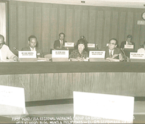

home > 기관 역사 > 기관변천사
기관변천사Milestones
1971. ~ 1981.
가족계획연구원 The Korean Institute for Family Planning
인구 및 가족정책 개발 연구의 태동
한국보건사회연구원의 모태인 가족계획연구원은 19기년 7월 1일 보건사 회부 소속의 특수법인으로 설립되었다. 1971년은 제1〜2차 경제개발 5개년계획이 완료되고，제3차 계획수립이 마무리 단계에 있던 시점이었다. 1인당 국민소득이 87$(1962년)에 불과하던 I960년대 초반 우리나라의 가장 시급한 국가적 과제는 경제개발을 통한 국민소득의 향상이었다. 이에 따라 1962년부터 제1차 경제개발 5개년계획을 필두로 일련의 경제개발계획이 수립 추진되기 시작했다. 제1차 경제개발 5개년계획은 10년 내에 국민총생산과 국민소득을 두 배로 증대시킨다는 의욕적인 목표를 설정하고, 계획기간 중 연평균 경제성장률 목표를 7.1%로 설정했다. 그러나 이러한 경제목표 달성에 있어 1950년대 후반~1960년대 초의 베이비 붐(baby boom)에 따른 급속한 인구성장이 가장 큰 장애요인으로 등장하였다. 급격한 인구성장률을 둔화시키지 않고는 경제성장 목표의 달성이 불가능하다는 정책적 판단 하에 1961년 국가재건최고 회의는 경제개발 5개년계획을 실질적으로 뒷받침하는 범국가적 정책의 하나로 가족계획사업을 추진하기로 결의했다.
자세히보기
-
법령
- 1970 가족계획연구원법 [시행 1970.12.31.] [법률 제 2270호, 1970.12.31., 제정]
- 1971 가족계획연구원법시행령 [시행 1971.5.3.] [대통령령 제5626호, 1971.5.3., 제정]
- 1971 가족계획연구원법시행령 [시행 1971.11.13.] [대통령령 제5845호, 1971.11.13., 일부개정]
- 1981 가족계획연구원법 [시행 1981.7.1.] [법률 제 3417호, 1981.4.4., 타법폐지
- 1981 가족계획연구원법시행령 [시행 1981.7.1.] [대통령령 제10293호, 1981.4.23., 타법폐지]
-
연구성과
-
가족계획연구원 주요 연구내용
- 1. 가족계획사업 모니터링
- 2. 가족계획사업 성과 및 효과 평가
- 3. 가족계획사업 정책연구
- 4. 정책연구 활성화
-
정기간행물 및 보고서 407건
- 정기간행물 85건
- 정기간행물 322건
-
전체 발간 보고서 322건
- 보건분야 보고서 97건
- 보건 & 사회분야보고서 1건
- 사회분야 보고서 244건
-
-
관련자료
-
- 대통령기록관 가족계획연구원법 1970-02-01
- 국가기록원 가족계획연구원법 (법률 제 2270호) 1970
- 국가기록원 가족계획연구원법 (안) 1970
-
- 국가기록원 가족계획연구원 연보 1971 1972
- 국가기록원 가족계획연구원 연보 1972 1973
- 국가기록원 가족계획연구원 연보 1973 1974
-
- 네이버 뉴스 라이브러리 가족계획연, 지도층인사 대상 조사 가족계획동기는 주로 가정문제 1975-02-11
- 네이버 뉴스 라이브러리 홍종관씨 조사 저교육층의 인공유산 급증 1975-02-18
-
- The New York Times South Korea Cautiously Shows Progress in Curbing Growth of Its Population 1974-10-06
-
- International Development Research Information Service (IDRIS) Health/Family Planning-"Ban" Chiefs (Korea) 1978-10-07
- Google Report on the operations research study on basic health services in
- International Development Research Information Service (IDRIS) Health/Family Planning-"Ban" Chiefs (Korea) 1978-10-07
- Google Report on the operations research study on basic health services in
-
- 

X 닫기
국립가족계획연구원1970~1971
- 1970 한국보건사회연구원 40년사, 50년 역사적 전개 등 리스트
- 1971 한국보건사회연구원 40년사, 50년 역사적 전개 등 리스트
- 1970 한국보건사회연구원 40년사, 50년 역사적 전개 등 리스트
- 1971 한국보건사회연구원 40년사, 50년 역사적 전개 등 리스트
- 1970 한국보건사회연구원 40년사, 50년 역사적 전개 등 리스트
- 1971 한국보건사회연구원 40년사, 50년 역사적 전개 등 리스트
가족계획연구원1970~1981
- 1970 한국보건사회연구원 40년사, 50년 역사적 전개 등 리스트
- 1971 한국보건사회연구원 40년사, 50년 역사적 전개 등 리스트
- 1971 한국보건사회연구원 40년사, 50년 역사적 전개 등 리스트
- 1972 한국보건사회연구원 40년사, 50년 역사적 전개 등 리스트
- 1973 한국보건사회연구원 40년사, 50년 역사적 전개 등 리스트
- 1975 한국보건사회연구원 40년사, 50년 역사적 전개 등 리스트
- 1981 한국보건사회연구원 40년사, 50년 역사적 전개 등 리스트
- 1981 한국보건사회연구원 40년사, 50년 역사적 전개 등 리스트